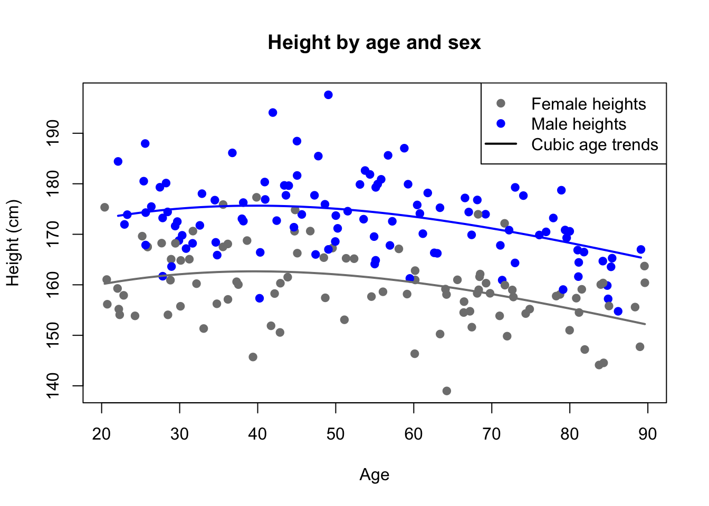
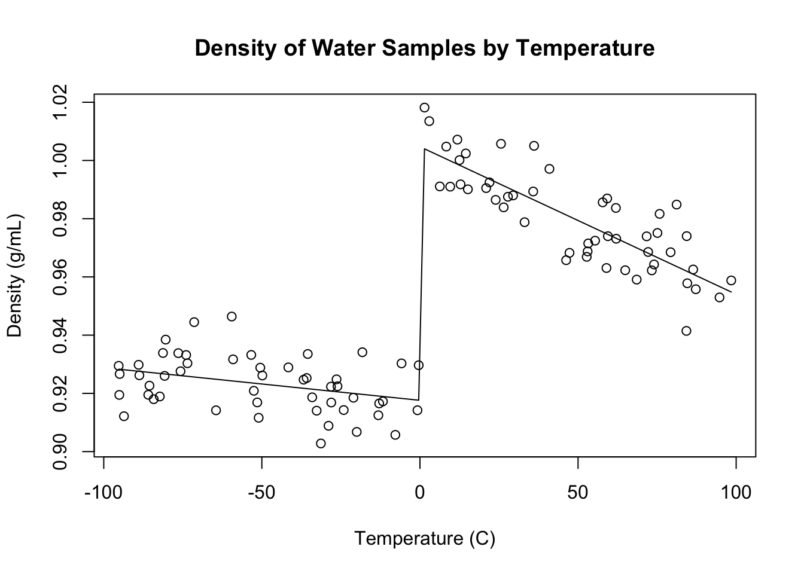

If we “zoom out” for a minute, we’ll see that both categorical predictors and interaction terms are specific examples of a broader phenomenon, sometimes called feature engineering: the creation of new variables from our existing data which better capture the systematic variance of the model or help the model to better conform with its theoretical assumptions.
Past examples of feature engineering
Because OLS regression searches across all linear combinations of its predictors to find the best-fitting model, a simple linear transformation of a predictor will never change or improve the overall model fit, residuals, or fitted values. More formally, if your data contains a predictor variable \(X_1\), then adding a new predictor \(X_2=c_0+c_1 X_1\) will not affect the model, since the new predictor is perfectly collinear with an existing predictor. Instead, new features should add new information to the model by pursuing nonlinear transformations of the existing variables. Some of our existing modeling tricks can be repurposed for feature engineering:
Standard logarithmic or power transformations of a predictor. We previously studied how these transformations could improve the model’s fit to the IID error assumptions. They also can be used to capture unexplained variance.1 For example, the lot size of a home affects its sales price, but we might hypothesize that the relationship isn’t linear. Adding 2000 sq ft to a small city lot might result in a huge change in sale price, but adding the same 2000 sq ft to a larger rural lot might not have the same effect. Using a square root transformation on lot size might help to account for this sort of “diminishing returns”.
Categorical predictors. Many datasets come with categorical predictors, but often we can improve the model by creating our own. Consider extracting U.S. states from the first two digits of a ZIP code, or using a restaurant’s cash register timestamps to label each meal as being “breakfast”, “lunch”, or “dinner”. Our original variables are often unhelpful: ZIP codes are not truly numeric and often have too many levels to enter our regression, while cash register timestamps would have very little explanatory power as a linear predictor (from 00:01 to 23:59). But the categorical variables we can build from them often represent important real-world features.
Interactions. Normally, we include interactions to precisely express a hypothesized synergy between two variables. However, we can always multiply (or divide) two predictors to form a novel third predictor, and sometimes this product has a real-world significance beyond synergy. For example, the damage caused by an asteroid impact on the Earth is most directly linked to the kinetic energy of the impact, \(E_k=mv^2/2\). While the data might not be linear with either asteroid mass or asteroid speed, we might find that the product (i.e. the interaction) between mass and speed-squared is a fantastic linear predictor of impact severity.
In addition to these techniques, which we find already among our bag of tricks, I’d like to introduce a few new feature engineering techniques:
Polynomial terms
We often fit regressions to learn more about how a specific predictor affects a response variable, but that relationship is often masked by other variables which are affecting the response at the same time as our predictor of interest. The specific relationship of these other variables to the response is not really of interest to us, but we must include these other variables in our model so as to better reveal the relationships that do interest us. These outside predictors are sometimes known as nuisance parameters, and we generally want to remove their influence on the model for the lowest possible “cost” in error degrees of freedom.
One way to effectively control for the nonlinear effects of nuisance parameters is to introduce a polynomial trend in your regression modeling, which means adding a variable, and also the square of that variable, and possibly the cube and the fourth power, etc. as you deem necessary. By adding multiple powers of a single variable, we are able to approximate almost any non-linear trendline for a relatively small number of model degrees of freedom.2
Polynomial trends are typically used with a time-based variable, though they can be paired with any continuous or regularly-observed discrete predictor. Consider an example in which a researcher wanted to learn the true mean height difference between men and women in the United States. Gathering a sample of 100 men and 100 women, the researcher could perform a simple two-sample t-test for the difference. However, the estimates will be muddied by age: very young and very old individuals are typically shorter than their height as young adults. This age effect may be unbiased, but it creates additional variance which impairs our ability to resolve and distinguish the true difference between sexes.
Consider two height models, each capable of estimating the true mean difference in heights between adult men and women in the United States:
In both models, the coefficient \(\hat{\beta}_1\) estimates the mean height difference of men relative to women. I simulated some data based on a real 2021 study by the Centers for Disease Control (CDC), and reflected the real age and sex trends as accurately as I could, including a true height differential between men and women of 12.3 cm. The simple model (M1) estimated the height difference as 13.0 cm, with a standard error of 1.1 cm. The polynomial model (M2) estimated the height difference as 12.4 cm, with a standard error of 1.0 cm. The second model did better because it accurately identified some of the height variation in both groups as being age-based, and was able to estimate and remove this variation, allowing a better estimate of the sex-based variation that remained.
Code
set.seed(2015)ages <-runif(200,20,90)male <-sample(0:1,size=200,replace=TRUE)ageheights <-rnorm(200,162.6,7)ageheights[male==1] <- ageheights[male==1]+12.3ageheights[ages>30& ages<40] <- ageheights[ages>30& ages<40]+0.1ageheights[ages>40& ages<50] <- ageheights[ages>40& ages<50]-0.3ageheights[ages>50& ages<60] <- ageheights[ages>50& ages<60]-1.3ageheights[ages>60& ages<70] <- ageheights[ages>60& ages<70]-1.9ageheights[ages>70& ages<80] <- ageheights[ages>70& ages<80]-4.4ageheights[ages>80] <- ageheights[ages>80]-7plot(ages,ageheights,col=c('grey50','#0000ff')[1+male],pch=19,main='Height by age and sex',ylab='Height (cm)',xlab='Age')agehgt <-lm(ageheights~male+ages+I(ages^2)+I(ages^3))lines(sort(ages[male==1]),agehgt$fitted.values[male==1][order(ages[male==1])],col='#0000ff',lwd=2)lines(sort(ages[male==0]),agehgt$fitted.values[male==0][order(ages[male==0])],col='grey50',lwd=2)legend(x='topright',pch=c(19,19,NA),lwd=c(NA,NA,2),col=c('grey50','#0000ff','black'),legend=c('Female heights','Male heights','Cubic age trends'))

Age-based polynomial used to help model sex/height relationship
Students often wonder whether such a model is still considered a “linear” regression, since these lines of best fit are now clearly curved. However, linear regression only means that our fitted values are a linear combination of the predictors, i.e.\(\hat{\boldsymbol{y}} = \sum_{j=0}^k \hat{\beta}_j \boldsymbol{x}_j\). A nonlinear model would be one where the betas or the predictors act as exponents, or roots, etc. As far as the regression is concerned, there is no meaningful difference between using age2 as a predictor or using a new linear predictor that just happens to have the same values as age squared.
Modeling structural breaks with dummy variables
As mentioned previously when discussing the IID assumptions, sometimes our data encompasses multiple generating processes with different parameters. When these generating processes involve different error variances, we often must employ advanced solutions such as weighted least squares (WLS), or resort to desperate measures such as excluding large amounts of data from our analysis. But if the errors are homoskedastic, and we have a good sense of when the generating process changes, we can model the structural breaks with indicator (“dummy”) variables.
Consider the density of water at different temperatures. In general, warmer temperatures excite the molecules of any substance, driving them farther apart and lowering the density. However, water has a crystalline solid phase, so the density drops dramatically when ice freezes, even though lower temperatures usually create higher densities:
Code
set.seed(2003)temp <-runif(100,-100,100)dens <-0.915-0.00015*temp+rnorm(100,0,0.01)dens[temp>0] <- dens[temp>0]+0.085-0.00025*temp[temp>0]plot(temp,dens,main='Density of Water Samples by Temperature',ylab='Density (g/mL)',xlab='Temperature (C)')dens.lm <-lm(dens~temp*I(temp>0))lines(sort(temp),dens.lm$fitted.values[order(temp)])

Presence of a structural break in water density data
We can easily and accurately model the structural break in this relationship using indicator variables and interactions:
While this model may look complicated and cumbersome, notice that it simplifies into two different models on either side of the freezing point, each with their own slope and intercept:
Although the illustration above makes clear that this particular structural break is both 100% real and rooted in real-world physics laws, in less certain circumstances we can perform hypothesis tests on whether the parameters \(\beta_2\) and \(\beta_3\) might really be 0 to see whether the model requires two different intercepts or two different slopes, respectively.
In general we can model structural breaks whenever we feel the data support it. However, be advised that using your plots of the data or model residuals to determine the existence or placement of a structural break is considered cherry picking, which is a form of overfitting the model. Wherever possible, hypothesize a structural break without looking too closely at the model fit, and root your placement of the break in a firm a priori belief about a changed generating process, rather than chasing ghosts in your regression residuals.
In other words, some predictors are transformed to adjust the residuals, while other predictors are transformed in order to address non-linearities between \(X\) and \(Y\).↩︎
We are, in fact, recovering the Taylor series for the nonlinear trend. Any infinitely-differentiable function \(f\) can be locally approximated around a point \(a\) using the first few terms of the following infinite sum: \(f(x) = f(a) + f'(a)/1! (x-a) + f''(a)/2! (x-a)^2 + f'''(a)/3! (x-a)^3 + \ldots\).↩︎